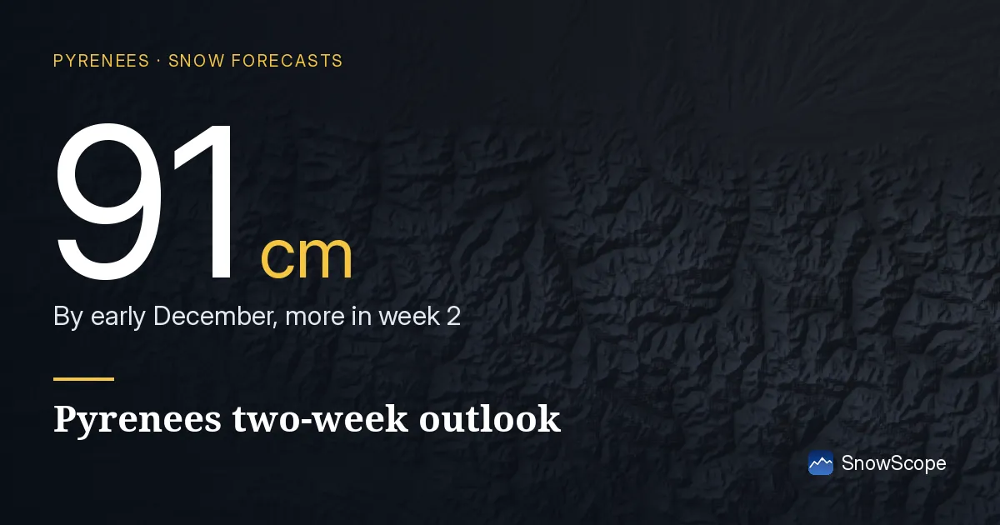

Pyrenees two-week outlook: 91 cm by early December, more in week 2
New snow will come to the Pyrenees in two pulses over the next two weeks, with roughly half the total (49 percent) arriving by 26 November. The highest slopes, above 2500 m, will collect around 44 cm on average across the range, while lower terrain gets much less.
See the live snow forecast for Cauterets Cirque du Lys in the SnowScope appSnow depth, powder alerts and the 3D map, free.
When the snow falls: week 1 or week 2?
The first week (20–26 November) brings the initial push. During this period, our snow model shows that 44 cm will accumulate on upper slopes of Cauterets Cirque du Lys, while Gavarnie-Gèdre will receive 50 cm. The heaviest single day in week 1 is 25–26 November, when Gavarnie-Gèdre sees 15 cm and Cauterets gets 12 cm.
Week 2 (27 November–3 December) will be quieter but steadier. Snow totals are smaller day to day, but they add up: Cauterets will gain 29 cm in week 2, and Gourette receives 35 cm. The final peak day is 3 December, when Gourette and Ordino-Arcalis lead with up to 12 cm.
| Resort | Snow depth | New snow, 72 h | Coming, next days | Top |
|---|---|---|---|---|
| Cauterets Cirque du Lys | 9 cm | 8 cm | 22 cm | 2,420 m |
| Gourette | 9 cm | 8 cm | 20 cm | 2,453 m |
| Gavarnie-Gèdre | 3 cm | 4 cm | 10 cm | 2,283 m |
| Piau-Engaly | 15 cm | 13 cm | 17 cm | 2,527 m |
| Astun | 3 cm | 6 cm | 15 cm | 2,272 m |
| Grand Tourmalet | 6 cm | 7 cm | 14 cm | 2,464 m |

Height matters: where snow is deepest
The mountains store most water as snow at high altitude. Between 2500 and 3000 m, the model estimates a median of 44 cm across the Pyrenees range over 14 days, with the upper quarter of predictions reaching 60 cm. This is where the snowpack builds most reliably.
At 2000–2500 m (the mid-mountain band of many resorts), you can expect 32 cm as a typical outcome, though some runs of the model show 51 cm. Below 1500 m, snow is scarce: only 1 cm median at 1000–1500 m, with high uncertainty. Early-season cover at low elevations is thin and risky.

What the models agree and disagree on
Both ECMWF IFS and NOAA GFS agree that snow is coming. They track the same weather systems. Disagreement emerges in the detail: at Gourette, one model sees as little as 27 cm total over 14 days, while the other predicts 112 cm. This spread reflects the forecast's natural limits two weeks ahead.
The most confident signals are for mid-week of week 1 (around 24–26 November) and early December (1–3 December). The gap between models narrows on these dates.

Water stored in the mountains
By 22 November, three days from now, the forecast shows 1710 km² of the Pyrenees will carry snow, up steeply from 560 km² two days ago. By 3 December, that area grows to 3160 km². More importantly, 1253 km² will hold 50 cm or more—enough to begin sustaining skiing and feeding winter runoff. The total range is 70044 km², so reliable snow depth will cover about 2 percent of terrain.
In water terms, 44 cm at 2500–3000 m represents significant storage for a Mediterranean mountain range where winter moisture is sparse. Ski resorts depend on this height band; lower slopes remain vulnerable.
Tips for skiers
- Ski above 2000 m for the best snow-to-rock ratio over the next two weeks. Terrain above 2500 m is safest for early season.
- Watch 25–26 November (week 1 peak) and 3 December (week 2 peak) as the two best days for new snow. Plan climbing or runs for the days after, once snow settles.
- Before going off-piste, check the official avalanche bulletin for the Pyrenees. Fresh snow on steep slopes raises instability, especially where the snowpack is thin.
- Expect melt or refreezing at slopes below 1500 m; ice may form under any new snow if temperatures are near zero.
- Use the SnowScope app to zoom into upper slopes at your chosen resort and track how the forecast evolves day by day.
About these numbers
Resort snow depths are the deepest snow on the resort's upper slopes from the SnowScope snow model (about 1 km, run of 18 November); they are estimates for an area, not a measurement at one point. Station values are measurements on the date shown. Forecasts can change. Always read the official avalanche bulletin before going off-piste.
Official avalanche bulletins: Météo-France / Meteocat / AEMET
Cite this report
For research, teaching or the press: the numbers and charts are free to reuse under CC BY 4.0 with this citation.
SnowScope (2026), Pyrenees two-week outlook: 91 cm by early December, more in week 2, https://snowscope.app/blog/en/2026/11/pyrenees-2-week-snow-forecast-maps-19-november-2026.html, accessed 2026-11-19
SnowScope (Atlas Labs). (2026, November 19). Pyrenees two-week outlook: 91 cm by early December, more in week 2. SnowScope snow reports. https://snowscope.app/blog/en/2026/11/pyrenees-2-week-snow-forecast-maps-19-november-2026.html
BibTeX
@misc{snowscope2026pyrenees2weeksnowforecas,
author = {{SnowScope (Atlas Labs)}},
title = {Pyrenees two-week outlook: 91 cm by early December, more in week 2},
year = {2026},
month = nov,
howpublished = {\url{https://snowscope.app/blog/en/2026/11/pyrenees-2-week-snow-forecast-maps-19-november-2026.html}},
note = {Published 2026-11-19 12:26 UTC; accessed 2026-11-19}
}· CC BY 4.0 · Methods, data and tools →
Cauterets Cirque du Lys: snow and temperature by height, this winter vs last (tools) →
Follow Cauterets Cirque du Lys
Free: a message when fresh snow is coming, and the forecast every morning.
More snow reports

Piau-Engaly leads the forecast with 37 cm of new snow by 13 November; 24 cm is expected on 12 November.

Compare Grandvalira and Spanish resorts in December 2026 for snow depths, lift heights, and prices starting from 49.00 EUR.

Grandvalira is often sold as cheap December skiing, yet natural snow at the base averages just 9 cm in past winters.